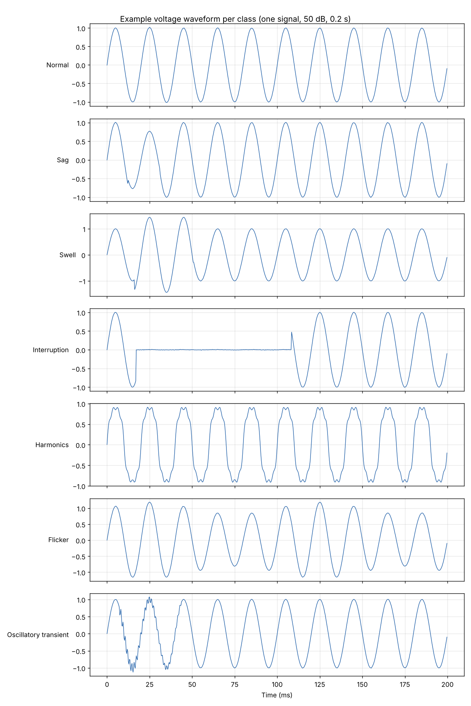
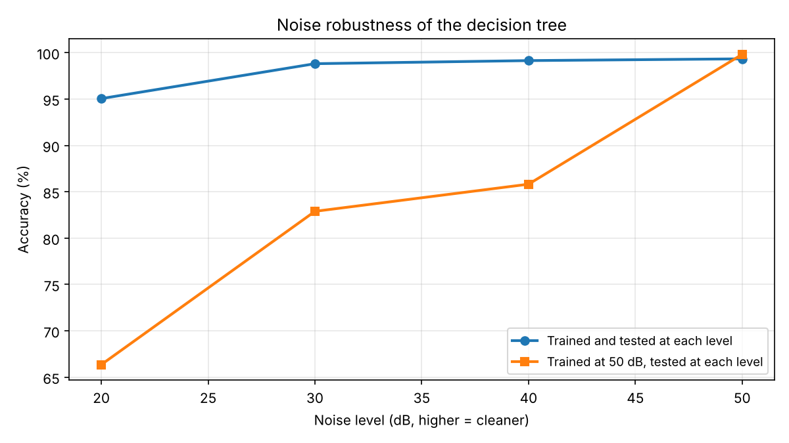

Power Quality Disturbance Classification
A simple classifier that names the type of power quality problem from its signal, and suggests a first action. All data is simulated.
In short
What we did
- Got the data: a public Mendeley dataset of wavelet features, and a public GitHub dataset of raw voltage waveforms.
- Tested fairly: 70% of the data for training, 30% kept aside to test. We also used 5-fold cross-validation, and the same split for every model.
- Compared models: a decision tree (easy to read), SVM, random forest and a small neural network (CNN).
- Focused on wavelets: the frequency-domain (FFT and STFT) analysis has been removed, so every result here uses wavelet features or time-domain voltage features.
Main results
Wavelet features (Mendeley dataset)
| Data | Holdout | 5-fold CV |
|---|---|---|
| Wavelet features, 7 classes | 100.00% | 98.80% |
| Wavelet features, 13 labels | 97.78% | 98.27% |
Voltage waveforms (GitHub dataset): which model works best
| Noise | Decision tree | Random forest | Small CNN |
|---|---|---|---|
| 20 dB (very noisy) | 86.24% | 89.57% | 97.95% |
| 50 dB (clean) | 99.24% | 99.52% | 99.76% |
These use six electrical features per signal (RMS, peak and sudden jump). The CNN does best in noise because it reads the full voltage wave, while the other models only see the six summary numbers. Adding the wavelet features to the electrical ones raises the random forest to 97.33% at 20 dB and 99.52% at 30 dB.
Training on clean (50 dB) signals only drops the decision tree to about 66% at 20 dB. Training on all noise levels together brings the CNN to 98.5% at 20 dB (average of five runs).
What the voltage looks like


In MATLAB Online, after opening the link, type show_github_pqd in the Command Window to draw all the graphs.
Customer report
The model names the problem and suggests a first action, such as a DVR for a sag or a UPS for an interruption. On 124 test cases it was correct every time. The actions are indicative only and depend on the system they are installed in.
Reference papers
- Xu et al. (2026), hybrid transformer and wavelet model. Electric Power Systems Research 253, 112547. DOI 10.1016/j.epsr.2025.112547. Read the paper
- Zhao, Shang and Sun (2019), wavelet features with a decision tree. Protection and Control of Modern Power Systems 4, 27. DOI 10.1186/s41601-019-0139-z. Read the paper
What this project adds: both papers use their own generated data. This project uses public datasets that anyone can download and check, and compares several models on the same splits.
Limits
The data is simulated, so these results show how well the features separate the classes, not how a real meter would perform. The voltage data has no current measurements. The voltage features are our own, so those numbers can't be compared directly with the Mendeley results.
Run it yourself
The MATLAB scripts and Python code are in the GitHub repository. The first run of the voltage analysis downloads about 260 MB.
clear functions run_mendeley_project % wavelet results run_mendeley_report % customer report show_github_pqd % voltage waveforms and noise test show_ml_comparison % model comparison charts
Code and data notes: github.com/SumaAcharya/MinorProject